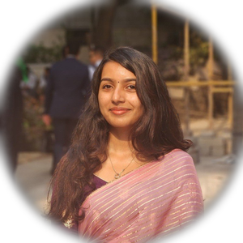

Computer Architecture · ASIC Design · Digital IC · SoC Verification
Graduate student at the University of Illinois Urbana-Champaign (MEng ECE, expected May 2027), with 2+ years of industry experience designing and verifying ASIC silicon at Samsung Semiconductors, currently interning on NoC and PCIe hardware at Chicago UpDown Computing. I work at the intersection of RTL design, microarchitecture, and SoC verification.

Click a project for the full writeup.
Open to internship and full-time opportunities in digital IC design, computer architecture, and SoC verification.